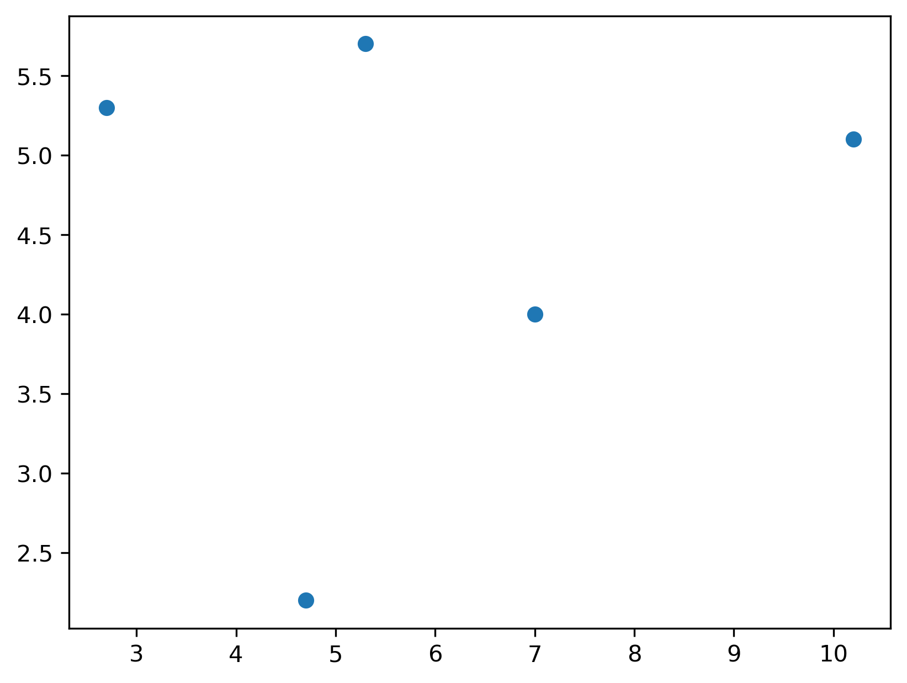
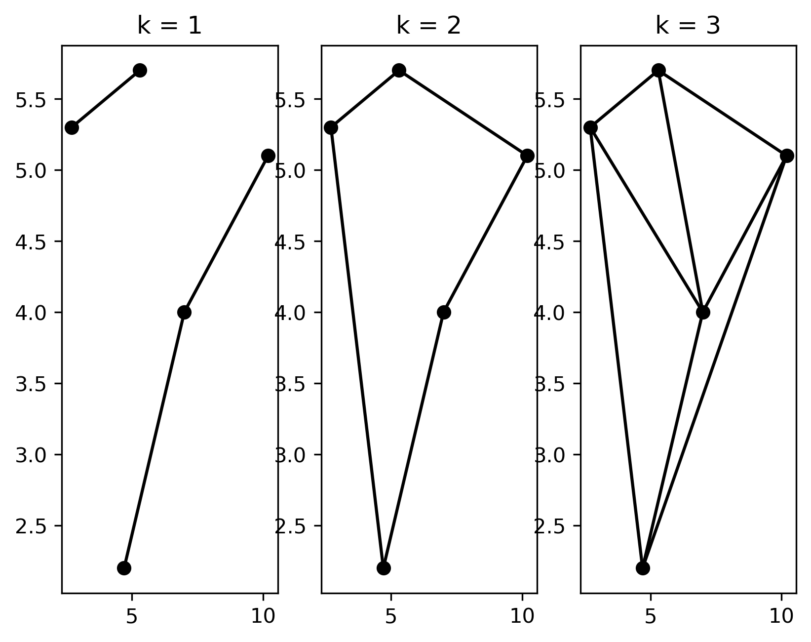
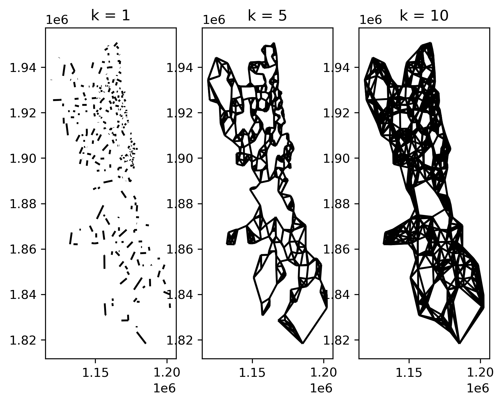
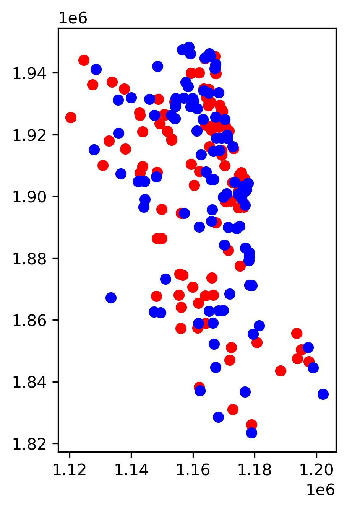
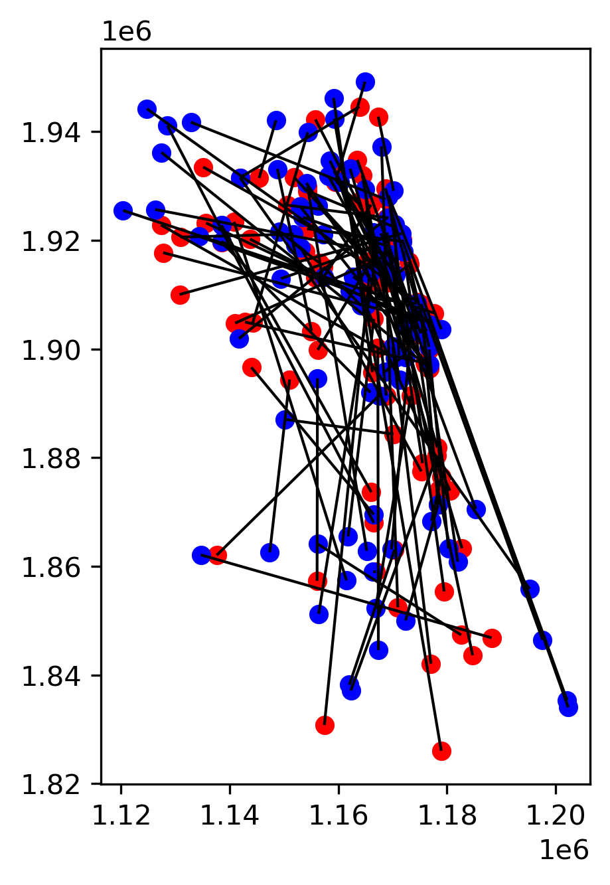

This page was generated from user-guide/graph/matching-graph.ipynb.
Interactive online version:

Spatial matching graph¶
Author: Levi John Wolf
Basic Usage¶
[1]:
import os
import sys
sys.path.append(os.path.abspath(".."))
import geopandas
import matplotlib.pyplot as plt
import numpy as np
[2]:
from libpysal.graph import Graph
[3]:
points = np.vstack([(10.2, 5.1), (4.7, 2.2), (5.3, 5.7), (2.7, 5.3), (7, 4)])
gdf = geopandas.GeoDataFrame(geometry=geopandas.points_from_xy(*points.T))
[4]:
plt.scatter(*points.T)
[4]:
<matplotlib.collections.PathCollection at 0x16aff2810>

[5]:
g1 = Graph.build_spatial_matches(gdf.geometry, k=1)
g2 = Graph.build_spatial_matches(gdf.geometry, k=2)
g3 = Graph.build_spatial_matches(gdf.geometry, k=3)
[6]:
f, ax = plt.subplots(1, 3)
for i, g in enumerate((g1, g2, g3)):
g.plot(gdf, ax=ax[i])
ax[i].set_title(f"k = {i + 1}")

Larger Problem¶
[7]:
import geodatasets
stores = geopandas.read_file(geodatasets.get_path("geoda liquor_stores")).explode(
index_parts=False
)
[8]:
stores.head()
[8]:
| id | placeid | geometry | |
|---|---|---|---|
| 0 | 0 | ChIJnyLZdBTSD4gRbsa_hRGgPtc | POINT (1161395.910 1928443.285) |
| 1 | 3 | ChIJ5Vdx0AssDogRVjbNIyF3Mr4 | POINT (1178227.792 1881864.522) |
| 2 | 4 | ChIJb5I6QwYsDogRe8R4E9K8mkk | POINT (1178151.911 1879212.002) |
| 3 | 6 | ChIJESl0mMfMD4gRy23-8soxKuw | POINT (1141552.993 1910193.701) |
| 4 | 7 | ChIJg28YOdvMD4gRiV2lZcjSVyQ | POINT (1144074.399 1910643.753) |
[9]:
stores = stores.set_index(stores.placeid)
Solving for this graph in larger data will take time. The solution technique is somewhere between \(O(n^2)\) and \(O(n^3)\) if the solver recognizes it’s a matching problem.
[10]:
g1 = Graph.build_spatial_matches(stores.geometry, k=1)
g5 = Graph.build_spatial_matches(stores.geometry, k=5)
g10 = Graph.build_spatial_matches(stores.geometry, k=10)
[20]:
f, ax = plt.subplots(1, 3)
for i, g in enumerate((g1, g5, g10)):
g.plot(stores, ax=ax[i], nodes=False)
ax[i].set_title(f"k = {(1, 5, 10)[i]}")

Cross-matching¶
[12]:
sources = stores.sample(100)
sinks = stores[~stores.index.isin(sources.index)].sample(100)
ax = sources.plot(color="red")
sinks.plot(color="blue", ax=ax)
plt.show()

[13]:
import shapely
from libpysal.graph._matching import _spatial_matching
[14]:
sources = stores.sample(100)
sinks = stores[~stores.index.isin(sources.index)].sample(100)
[15]:
source_coordinates = sources.geometry.get_coordinates().values
sink_coordinates = sinks.geometry.get_coordinates().values
[16]:
crosspattern_heads, crosspattern_tails, weights, mip = _spatial_matching(
x=sink_coordinates, y=source_coordinates, n_matches=1, return_mip=True
)
[17]:
mip.sol_status
[17]:
1
[18]:
lines = shapely.linestrings(
list(
zip(
map(list, source_coordinates[crosspattern_heads]),
map(list, sink_coordinates[crosspattern_tails]),
strict=False,
)
)
)
[19]:
ax = sources.plot(color="red")
sinks.plot(color="blue", ax=ax)
geopandas.GeoSeries(lines).plot(linewidth=1, color="k", ax=ax)
plt.show()
